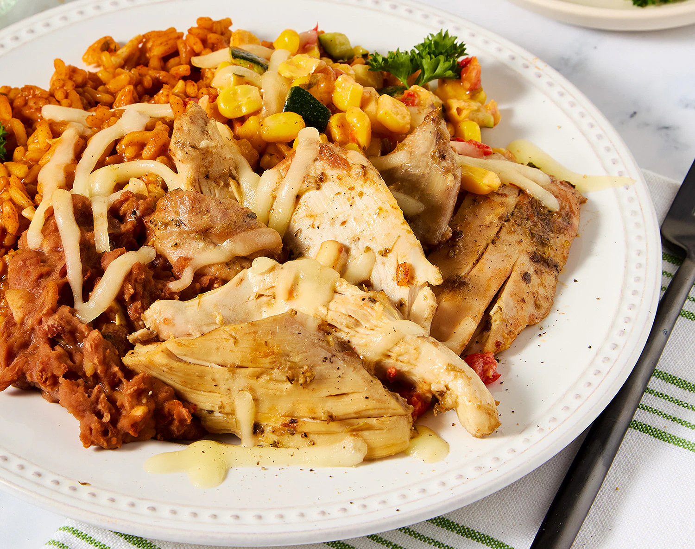
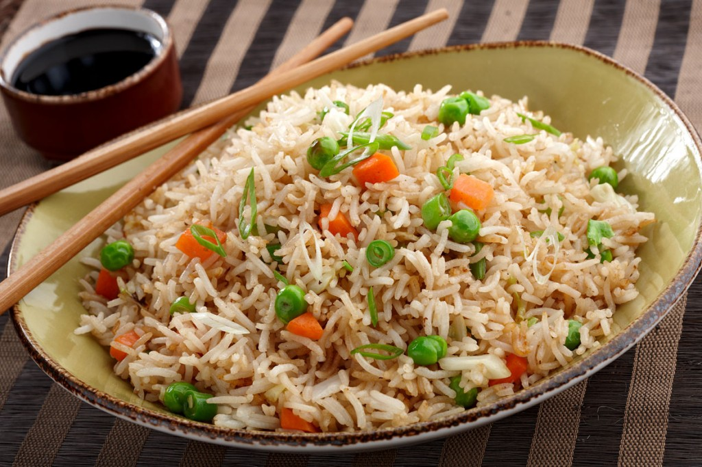
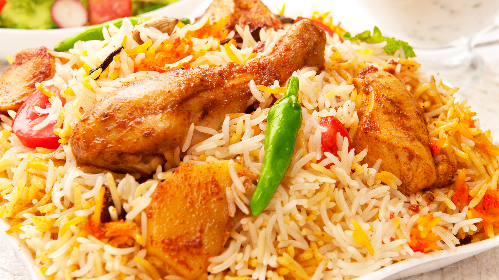

Our Meals are nothing you've ever tasted!
Enjoy our finest cuisines- from local to intercontinental, Don's kitchen has got you covered. Our dishes are made with top class ingredients by highly skilled chefs, not only to satisfy tummies, but also to spread love!


